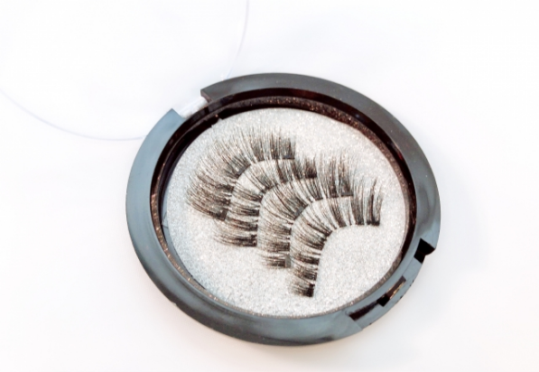
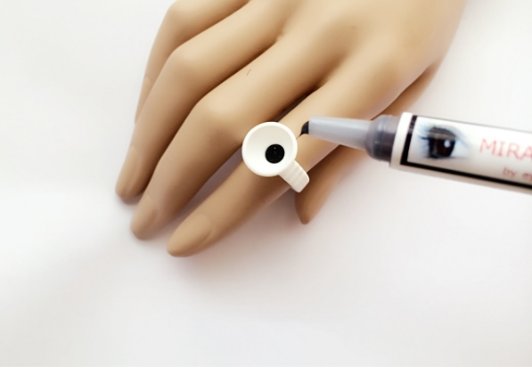

サロンドエフの特徴

 多種多様なエステ
多種多様なエステ
まつげは一人一人長さも違えば太さも違います。
当然、長さや太さにあったエクステを装着しなければ、不自然になるばかりでなく長持ちしません。
お客様一人一人ご希望のイメージでベストな仕上がりになるように、多種多様なエクステを用意しています。

 国産グルー使用
国産グルー使用
お客様の安心・安全のためにサロンドエフは高品質な国産グルー（接着剤）を使用しています。 日本人向けに作られた国産品で、低刺激のグルーで安心・安全です。
 カウンセリング
カウンセリング
お客様のイメージ通りの仕上がりにするために、施術の前にじっくりとカウンセリングを行います。
お客様のご要望をお尋ねし、まつげの状態を考慮した上でベストな仕上がりになるように、長さや太さや本数のご提案をさせていただきます。
 途中チェック
途中チェック
お客様は完成後の鏡を見るまで不安なものです。オーダーのミスマッチや、イメージの違いを防ぐために、サロンドエフではある程度エクステを付けたら途中段階をご確認いただきます。
「もっと長くしたいな」「もっと短くしたいな」などあったらお客様のご希望に合わせて仕上げていきます。気になったら都度ご確認いただけますのでお気軽にお声かけください。